Lý thuyết bài học
Trong bài này, học sinh sẽ học cách tạo danh sách và bảng trong HTML để trình bày thông tin một cách khoa học và hợp lý. Để rõ hơn, các bạn hãy theo dõi bài giảng sau:
Bài tập ôn luyện
Câu 1: Thẻ HTML dùng để tạo các ô dữ liệu trong bảng là
A. <td>.
B. <th>.
C. <table>.
D. <tr>.
Câu 2: Khi định dạng tạo khung bảng, thuộc tính nhỏ độ_dày của thuộc tính con border trong thuộc tính style được đặt theo
A. %.
B. px.
C. mm.
D. pt.
Câu 3: Khi định dạng tạo khung bảng, thuộc tính nhỏ kiểu_viền của thuộc tính con border trong thuộc tính style không nhận giá trị nào sau đây?
A. None.
B. Dotted.
C. Shadow.
D. Solid.
Câu 4: Khi tạo danh sách, thuộc tính type được dùng để làm gì?
A. Xác định giá trị bắt đầu đánh số, nhận giá trị là các số nguyên.
B. Xác định kiểu danh sách.
C. Xác định kiểu kí tự đầu dòng.
D. Xác định kiểu đánh số, các kiểu đánh số là "1", "A", "a", "I" và "i".
Câu 5: Phát biểu nào sau đây đúng?
A. Để thêm tiêu đề cho bảng, ta sử dụng thẻ <caption>, ngay trước thẻ <table>.
B. Các dạng danh sách trong HTML cơ bản gồm danh sách có thứ tự và danh sách không có thứ tự.
C. Để chọn kí tự đầu dòng, ta thiết lập giá trị của đặc tính list-style-type trong thuộc tính style bằng một trong 4 giá trị disc, circle, square và none.
D. Sử dụng thuộc tính con length và height của thuộc tính style để điều chỉnh kích thước của bảng.
Câu 6: Đoạn mã HTML để tạo danh sách sau đây là
Nếu a2 > b2:
Nếu a2 < b2:
Nếu a2 = b2:
A.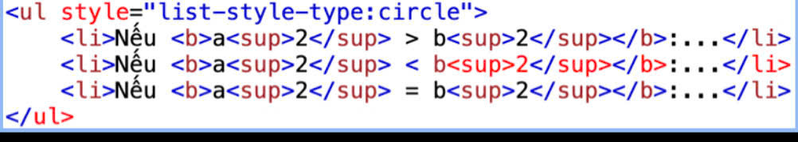
B.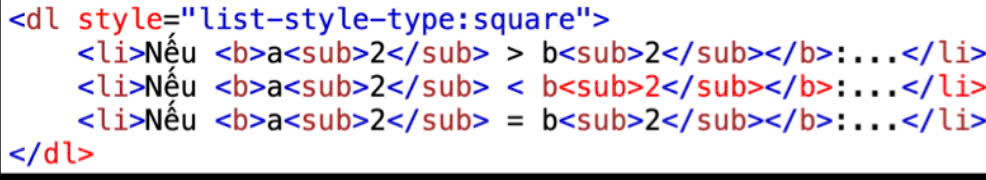
C.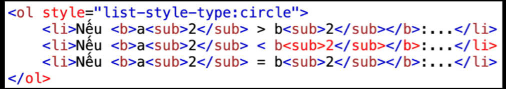
D.
Câu 7: Đoạn mã HTML để tạo danh sách sau đây là
GÓC LƯỢNG GIÁC
Khái niệm góc lượng giác và số đo của góc lượng giác.
Hệ thức Chasles.
A.
B.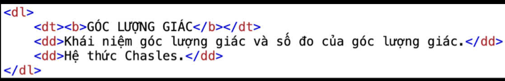
C.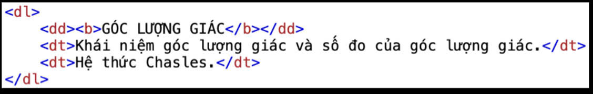
D.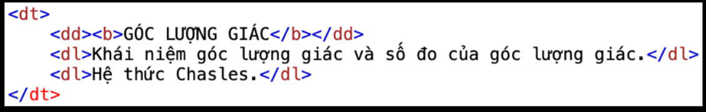
Câu 8: Để gộp ô theo cột, em sử dụng thuộc tính nào?
A. rowspan.
B. colspan.
C. colframe.
D. rowsize.
Câu 9: Đoạn mã HTML để tạo bảng sau đây là
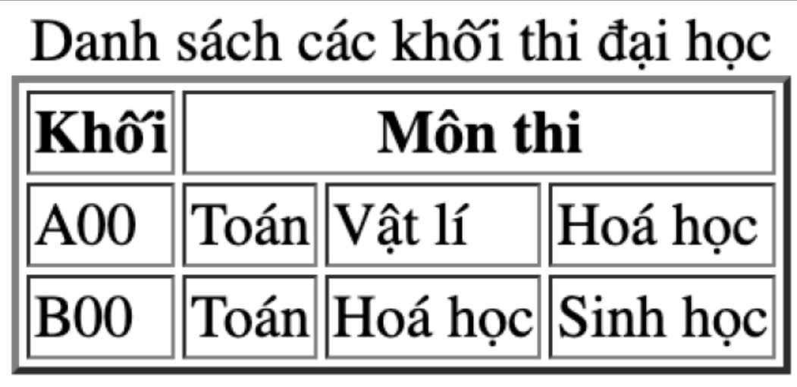
A. 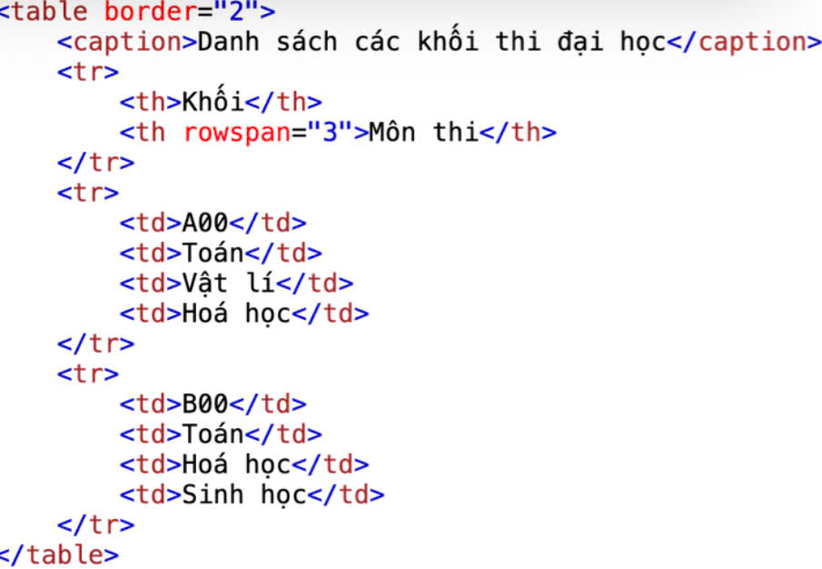
B. 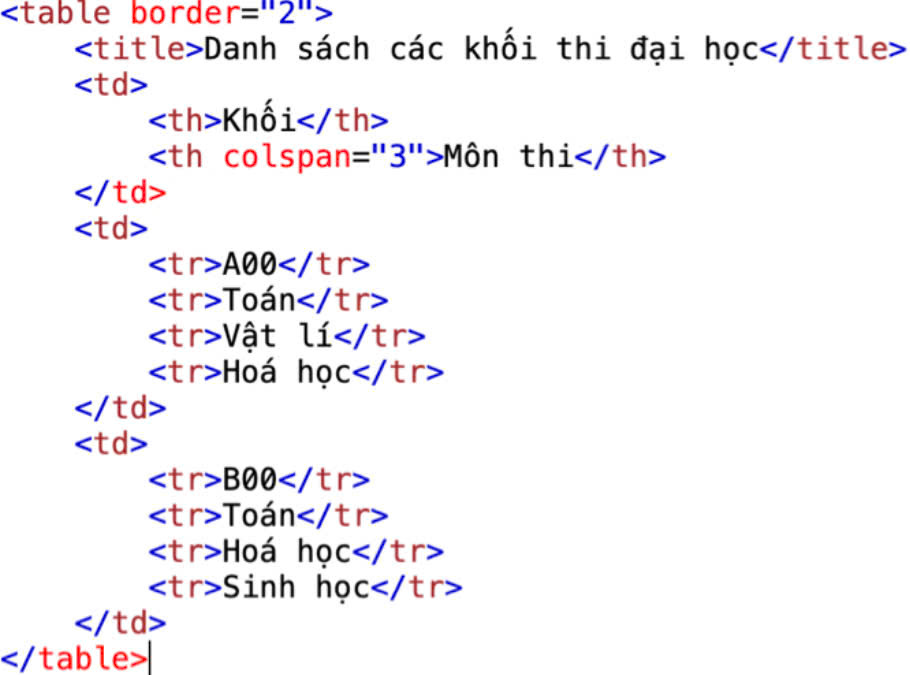
C. 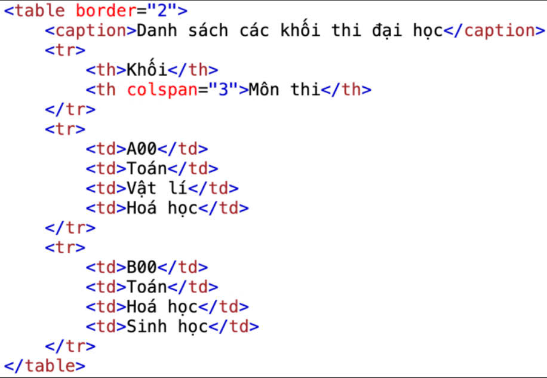
D. 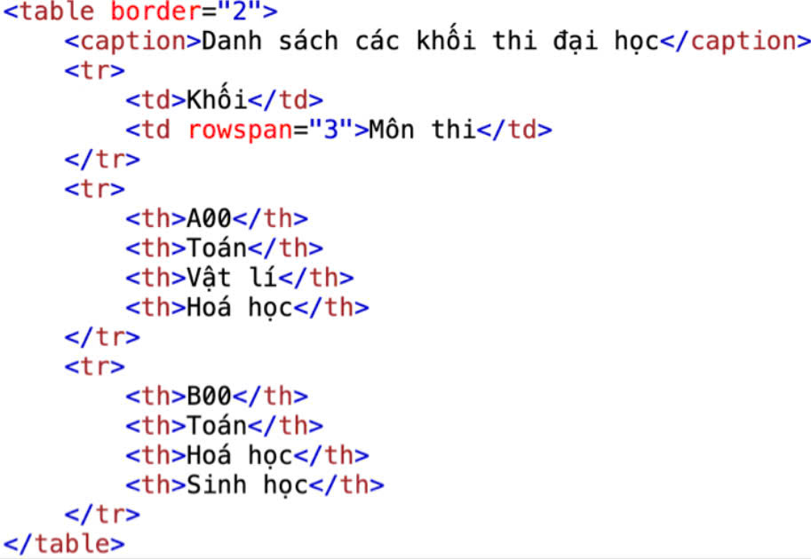
Câu 10: Để định dạng màu nền cho bảng, em sử dụng thuộc tính nào?
A. background.
B. color.
C. bgcolor.
D. tablecolor.
Trả lời:
Trắc nghiệm
1A 2B 3C 4D 5A 6D 7B 8A 9C 10C